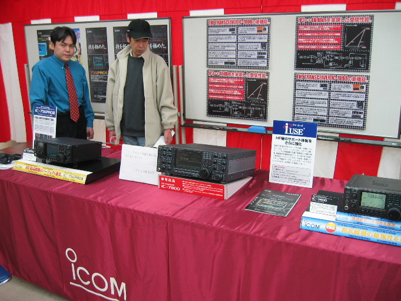
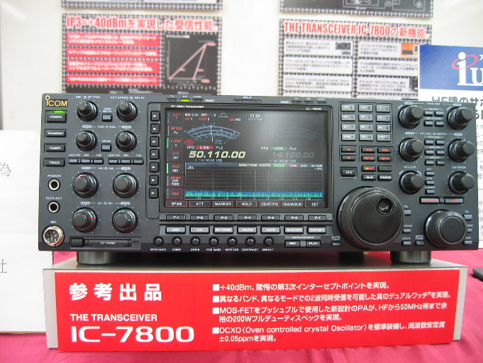

(左)"SEANET Convention 2003"で挨拶する9M2KN・Ken
(右)12月中旬にQRTが決まった9M2/JI1ETU・船久保さん(記念局9M0SEAで)
| 6m Today ! |
[Back Issues Dec.2003]
TIME:UTC(JST-09:00)
Report from JA1RJU (PM95sq)
31.Dec.2003(15:00b)
*VK-TV 06:00- 46.172 --
*9M-TV 07:00- 48.240/260 --
30.Dec.2003(15:00f)
*ZL-TV 02:10- 45.24/25/26--
ZL3NW 02:25 50.110 CW CQ
ZL4LV 02:27 50.110 SSB CQ
ZL3SIX/B 02:30- 50.0399 CW Beacon
*VK-TV 03:00- 46.172/240 -- strong!
*BY-TV 03:00- 49.747 --
*9M-TV 03:10- 48.240/260 -- strong!
ZL1UF 05:03 50.110 SSB
ZL3NE 05:04 50.110 SSB
ZL1VHF/B 05:05- 50.0433 CW Beacon
ZL3SIX/B 05:10- 50.0399 CW Beacon
ZL3TIC 05:10 50.110 SSB
ZL3NE 05:18 50.110 CW
ZL3TY 05:19 50.110 CW
*ZL-TV 05:20- 50.750/760 FM TV Audio strong!
VK4RGG 05:20- 50.058 CW Beacon
VK4ABP 05:20- 52.347 CW Beacon
VK2FHN 05:24 50.110 CW
VK2HO 05:27 50.110/120 SSB
ZL2MHF/B 05:30- 52.2754 CW Beacon
VK2ZXN 05:45 50.130 SSB
VK2BPL 05:48 50.110 CW
ZL3NE 05:49 50.110 CW
ZL3GS 05:49 50.110/107 CW
VK4CP 05:51 50.110 SSB CQ No JA!
ZL3TIC 05:58 50.140 SSB
ZL3SIX/B 06:15- 50.0399 CW Beacon
ZL3GS 06:15 50.110 CW
ZL3MH 06:55 50.110/130 SSB
ZL3SIX/B 07:00- 50.0399 CW Beacon
29.Dec.2003(15:00d)
*BY-TV 01:00- 49.747 --
*ZL-TV 01:50- 45.24/25/26--
*VK-TV 01:50- 46.172 --
*9M-TV 02:00- 48.240/260 -- strong!
DU1EV/B 02:30- 50.008 CW Beacon
3W22S 03:20 50.110/105 CW Chirping
3W22S 03:36 50.105 SSB
3W22S 03:57 50.110 CW CQing
3W22S 04:17 50.110 SSB/CW still good!
*VK-TV 06:00- 46.172/240 -- strong!
VK2ZXC 06:07 50.110 CW
C21SIX/B 06:10- 50.038 CW Beacon
VK2FHN 06:29 50.110 CW
28.Dec.2003(15:00c)
*ZL-TV 01:00- 45.260 --
*BY-TV 01:00- 49.747 -- strong!
*VK-TV 01:50- 46.172 --
VR2XMT 01:58 50.115 SSB
*ZL-TV 02:00- 45.24/25/26--
*9M-TV 02:30- 48.240/260 -- strong!
27.Dec.2003(15:00d)
*ZL-TV 01:00- 45.24/25/26--
*VK-TV 01:50- 46.172/240 --
V73SIX/B 01:57- 50.014 CW Beacon weak
VK2ZXC 02:41 50.110/130 SSB
VK4RGG/B 02:41- 50.058 CW Beacon
VK2TDN 02:46 50.110 SSB
VK2TWO 02:49 50.110 SSB
VK2PB 02:57 50.110 SSB
VK5GX 03:05 50.105 CW F.out 03:10z
*9M-TV 04:00- 48.240/260 -- strong!
DU1EV/B 03:05- 50.008 CW Beacon
*BY-TV 04:00- 49.747 -- strong!
*VK-TV 05:50- 46.240 -- strong!
DU1EV/B 07:30- 50.008 CW Beacon
26.Dec.2003(15:00c)
*ZL-TV 03:30- 45.250/260 --
*VK-TV 03:30- 46.172/240 --
*9M-TV 04:00- 48.240/260 --
25.Dec.2003(15:00d)
*ZL-TV 01:30- 45.24/25/26--
*9M-TV 05:30- 48.240/260 --
24.Dec.2003(15:00c)
*9M-TV 03:00- 48.240/260 --
*ZL-TV 04:00- 45.250/260 --
*VK-TV 05:30- 46.172/240 --
23.Dec.2003(15:00c)
*ZL-TV 01:00- 45.24/25/26--
*9M-TV 06:00- 48.240/260 --
DU1EV/B 06:20- 50.008 CW
22.Dec.2003(15:00c)
*ZL-TV 01:20- 45.24/25/26--
*9M-TV 04:30- 48.240/260 --
20-21.Dec.2003(00:00a-15:00a)
◎12/20日-12/21日の"Flash ! DX"の入感リポート(6m Today !)は休止します。
19.Dec.2003(15:00c)
*ZL-TV 05:00- 45.24/25/26--
*VK-TV 05:00- 46.172/240 --
18.Dec.2003(15:00d)
*BY-TV 02:00- 49.750 --
*ZL-TV 04:00- 45.24/25/26--
*VK-TV 04:30- 46.240 --
HL1LTC 04:38 50.110 SSB
DU1EV/B 05:30- 50.008 CW Beacon
*9M-TV 07:00- 48.240/260 --
DU1EV/B 07:00- 50.008 CW Beacon (still into PM95)
VK4ABW 07:26 50.110 SSB
VK3XQ 07:29 50.110 SSB
17.Dec.2003(15:00c)
*BY-TV 01:00- 49.750 --
*9M-TV 03:30- 48.240/260 --
*ZL-TV 06:00- 45.24/25/26--
*VK-TV 07:30- 46.172 --
DU1EV/B 08:30- 50.008 CW Beacon weak
16.Dec.2003(15:00d)
*ZL-TV 01:00- 45.24/25/26--
*VK-TV 01:30- 46.172/240 --
ZL4LV 01:53 50.110 SSB
V73SIX/B 02:00- 50.014 CW Beacon
ZL3TY 02:03 50.110 CW
*ZL-TV 06:00- 45.24/25/26-- strong! again
*ZL-TV 06:00- 50.760 FM TV Audio
FK8SIX/B 06:30- 50.0797 CW Beacon
15.Dec.2003(15:00d)
*BY-TV 00:30- 49.750 --
*ZL-TV 02:00- 45.24/25/26--
C21SIX/B 02:50- 50.038 CW Beacon
ZL1VHF/B 02:55- 50.0433 CW Beacon
*ZL-TV 02:55- 50.750/760 FM TV Audio
*VK-TV 03:00- 46.240 --
FK8CA 03:02 50.110 CW
FK8GX 03:04 50.110 CW
FK8SIX/B 03:05- 50.0797 CW Beacon
VK2ZXC 03:09 50.110 SSB
FK8GX 03:10 50.110 SSB
C21SIX/B 03:35- 50.038 CW Beacon (good!)
14.Dec.2003(15:00c)
*ZL-TV 02:00- 45.24/25/26--
13.Dec.2003(15:00c)
*ZL-TV 00:30- 45.24/25/26-- weak
*VK-TV 00:30- 46.172/240 -- weak
HL1LTC 00:53 50.110 CW
*BY-TV 01:00- 49.750 --
DU1EV/B 08:00- 50.008 CW Beacon
|
◎ いよいよお目見え？100万円機 IC-7800(13.Dec.2003) 価格が100万円の大台に乗ったI-COMの新製品、IC-7800がいよいよ店頭にお目見えしそう？。 12月13-14日の両日、"アイコムDAY"が秋葉原のロケット・アマチュア無線本館3階で開催され、 "目玉商品!!"としてIC-7800も展示された。 "+40dBm、驚愕の第3次インターセプトポイントを実現した受信性能" を売り物としたこの製品は、 その価格と共に、今年のハムフェアの会場でも注目された。 この日"実物"を前にいざ性能チェックと行きたいところだったが、 展示された同機には、電源コードは接続されているもののアンテナも、 スピーカーも接続されておらず、残念ながらその"音"を聞く事は出来なかった。 理由は簡単、IC-7800はまだ市場に出せる完成品は出来上がっていないとの事。 "完成品"が販売店に出荷されるのは早くても来月(来年！)以降になりそうとのICOM担当者の説明だったが、 製品として市場に出回るまでにはまだまだ多くの"チェック"が必要となる様子。 気になる6mの性能だが基本的にはIC-756PROⅡと変わらないと!!。 |


12.Dec.2003(15:00b)
(Very Quiet on the band)
11.Dec.2003(15:00c)
*BY-TV 01:00- 49.750 --
*ZL-TV 01:30- 45.24/25/26--
*VK-TV 01:30- 46.172 --
VK4AN 01:47 50.110 CW
VK2ZXC 02:03 50.110 SSB
VK3DUT 02:05 50.110/140 SSB
VK2BPL 02:25 50.110 CW
VK2ZXC 02:31 50.110 SSB
10.Dec.2003(15:00c)
*BY-TV 01:30- 49.750 --
DU1EV/B 05:20- 50.008 CW Beacon
*VK-TV 05:30- 46.172/240 --
09.Dec.2003(15:00c)
*BY-TV 01:30- 49.750 --
*ZL-TV 03:30- 45.24/25/26--
*VK-TV 03:30- 46.172 --
08.Dec.2003(15:00d)
*ZL-TV 02:00- 45.24/25/26--
*BY-TV 02:00- 49.750 --
*VK-TV 03:30- 46.172/240 --
ZL1VHF/B 03:52- 50.0433 CW Beacon
VK5ZMB 04:49 50.110 SSB
07.Dec.2003(15:00e)
*ZL-TV 02:00- 45.24/25/26--
*VK-TV 02:00- 46.240 --
ZL3NE 02:30 50.110 CW CQ
ZL4LV 02:34 50.110 SSB
ZL3TY 03:06 50.110 CW
ZL-TV 03:10- 50.750 -- ZL-TV Audio
ZL3NE 03:17 50.110 CW
ZL1VHF/B 03:20- 50.0433 CW Beacon
ZL3NE 03:42 50.110 CW
VK4RTL 07:00- 50.087 CW Beacon
VK4ABW 07:05 50.110 SSB
VK3CAT 07:09 50.110 SSB
VK2DN 07:10 50.110/130 SSB/CW
VK3XQ 07:10 50.110/130 SSB
VK5ZMB 07:11 50.110/130 SSB
VK3JGL 07:37 50.120 SSB
VK3DUT 07:41 50.110/150 SSB
VK7ZIF 07:49 50.110 SSB
VK4JH 07:51 50.120 SSB
VK2FHN 08:00 50.104 CW
VK4ABW 08:05 50.110 CW
VK2DN 08:12 50.110 CW
DU1EV/B 08:25- 50.008 CW Beacon
06.Dec.2003(15:00d)
*VK-TV 02:00- 46.172 --
*9M-TV 02:00- 48.240/260 --
*BY-TV 02:00- 49.750 --
*ZL-TV 02:20- 45.24/25/26-- still in 05:30z
VK8RAS 05:55- 50.0467 CW Beacon
ZL1VHF/B 06:00- 50.0433 CW Beacon
ZL3SIX/B 06:00- 50.0399 CW Beacon
ZL-TV 06:00- 50.740/750 -- ZL-TV Audio
ZL2GX 06:01 50.110 CW
ZL3JT 06:09 50.110/107 CW
ZL2GN 06:13 50.110 CW
ZL2GK 06:14 50.110 CW
ZL2TPY 06:26 50.120 SSB CQ
ZL3GS 06:29 50.110/105 CW
ZL4WA 06:31 50.110 CW CQ
ZL2AAA 06:38 50.110/120 SSB CQ
ZL2GK 07:10 50.110 CW
ZL2GK 08:20 50.117 SSB
05.Dec.2003(15:00d)
*ZL-TV 01:30- 45.24/25/26--
V73SIX/B 01:30- 50.014 CW Beacon
*VK-TV 02:30- 46.240 --
*VK-TV 03:30- 46.172/240 --
*ZL-TV 03:30- 45.24/25/26-- strong!
ZL1VHF/B 03:30- 50.0433 CW Beacon
DU1EV/B 05:45- 50.008 CW Beacon strong!
VK6RPH 07:40- 50.066 CW Beacon
DU1EV/B 07:40- 50.008 CW Beacon still good!
VK8RAS 08:40- 50.0467 CW Beacon
04.Dec.2003(15:00b)
*ZL-TV 02:30- 45.24/25/26--
*VK-TV 02:30- 46.240 --
03.Dec.2003(15:00d)
*ZL-TV 02:30- 45.24/25/26--
*VK-TV 02:30- 46.172/240 --
V73SIX/B 03:00- 50.014 CW Beacon
ZL-TV 03:30- 50.760 -- ZL-TV Audio
ZL1VHF/B 03:30- 50.0433 CW Beacon
VK3XQ 03:50 50.110 CW
VK2ZXC 03:59 50.110 CW
V73SIX/B 04:00- 50.014 CW Beacon strong!
VK3SY 04:04 50.110 CW
VK3DZM 04:09 50.120/132 SSB
VK2ZXC 04:11 50.110 SSB
V73SIX/B 05:30- 50.014 CW Beacon
02.Dec.2003(15:00d)
*VK-TV 02:30- 46.172/240 --
*ZL-TV 03:30- 45.24/25/26--
V73SIX/B 04:45- 50.014 CW Beacon
ZL-TV 05:30- 50.740/750 -- ZL-TV Audio
ZL1VHF/B 05:35- 50.0433 CW Beacon
ZL3NE 05:42 50.110 CW
V73SIX/B 06:00- 50.014 CW Beacon
*9M-TV 07:00- 48.24/25/26--
DU1EV/B 07:00- 50.008 CW Beacon strong!
KG6DX 07:56 50.110/120 SSB F.out 08:06z
01.Dec.2003(15:00b)
|
◎ 第31回SEANET Convention 2003(South East Asia Net Convention)が11月27日-30日の4日間、西マレーシア(9M2)のジョホールバル(Johor bahru)で開催された。
昨年のオーストラリア・パース(VK6)から引き継いで行われた今大会では、記念局の"9M0SEA"と、
大会期間中に行われた"CQ WW Contest(CW)"で9M4JBの2局が運用された。
マレーシアで"9M4"のコールサインが使用されるのは珍しく、WPXには貴重な運用だった。
9M0SEAからの6m運用はアンテナ建設が間に合わず今回は中止された。
◎ 9M2/JI1ETUのコールサインで西マレーシア(9M2)からアクティブにQRVしていた船久保さんが、
12月中旬からの日本赴任が決まり帰国する事になった。
船久保さんはマレーシア初の"6m WAC"の達成、IOTAの移動運用など、西マレーシアの6mの普及に活躍した。
9M2で使用したリグはマレーシアのアクティビティ向上のために引き続き現地に残される。
また今後の海外Pedition用のシステムもペナンに残される。 |